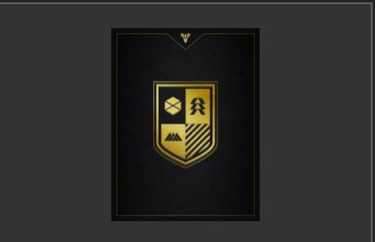

Below will be described some of the features of the game. I won't describe all as there are many, but I will describe the most important, to me!
Destiny 2 's music is composed by Michael C. Salvatori. This is the composer behind the iconic "Halo:Combat Evolve" Original Soundtracks. Destiny won two BAFTA Awards.
Destiny 2's amazing audio won several BAFTA Game awards: to me!
Couple with its amazing music, the game of Destiny 2 provides a slew of differing landscapes. From the Frozen moon of Europa, to the desert landscape of Mars, to the Lush Greens of the Summer in the "Earth", to dark allies in a decaying city to technologically advance halls and corners of an alien spaceship. when it comes to Sci-Fi, aims to cover it all Destiny 2 has it all.
Since this is a space Opera after all you travel the planets via spaceships. and move about the expansive maps in hovercrafts pretty much like Stars Wars's Speeders. And while you don't really get to fly the spaceships themselves, the hovercrafts and the animations of the spaceships, coupled with the exuberant landscapes, make it for an engaging experience.
The lore across destiny 1 and 2 is as expansive as that of games series as Elder Scrolls, the Halo Series, Dragon Age, and Warhammer 40K. In my personal opinion, One could say it is on par with some of the big literary treasures, like The Lord of the Rings. The lore spams across millions of Years, thousands of civilizations and the constant battle between the forces of light and dark.
Most of the lore is distributed outside of game in Books, and in game, through the many pieces of literature one can collect in-game, through what Bungie calls Grimoire, Or the lore associated with pieces of gear you can collect while playing.
Aside from its expansive Lore, and enticing music and environment, the gameplay stands out as well. Because destiny is an "always online" game, it requees you to play with others either in multiplayer mode, but also in cooperative mode against the environment in PVE.
Destiny's looter shooter mechanics allow users to customize their Guardians' amor, guns, light powers, their affiliation, and even their Ghost. most of the gear, you get for free while playing, but a lot of it comes from expansions and the Store, called Eververse.
The Game also has a currency system, where you can get free money, called Glimmer, but also real money, called in-game silver. The Stores take boths however, the best in-game gears and emotes are paid in silver. This is where Bungie makes most of their money, given that Destiny is Free-To-Play, at the moment. Below is a table detailing the way currency work:
| Currency | Definition |
|---|---|
| Glimmer | It is the most used currency in Destiny. It is available for Free upon beating an enemy in-game. |
| Silver | Silver is a currency accepted by the Eververse Trading Company in the Tower in exchange for Emotes and other cosmetic items. It is real money converted into a digital currency. |
| Bright Dust | According to Charles Burgar of The Gamer, "Bright Dust is one of the most valuable currencies in Destiny 2. This rare resource is needed to purchase items from the Eververse store..." |
During the game you are to fight several Races of aliens and synthetic life. There are The Cabal, which mirror the Roman Empire, the Hive, which mirror insect life, the Fallen, called so because they lost the traveler's light, and the Vex, artificial intelligence created at the dawn of existence. Each one of these antagonists comes with a variety of armor and technique, making the game interesting to play. Bungie has introduced variations of these over the years.